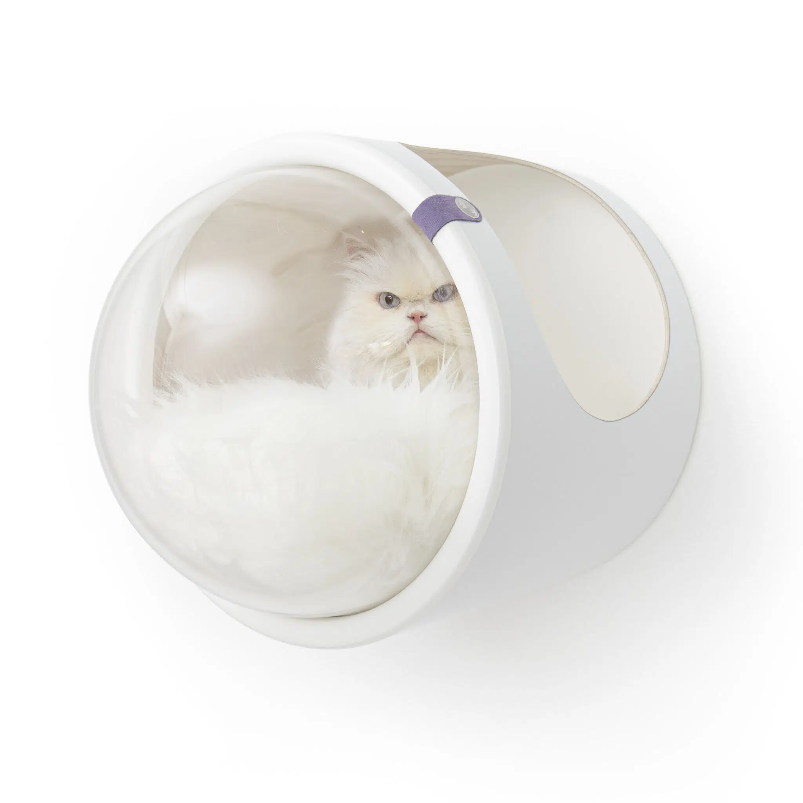
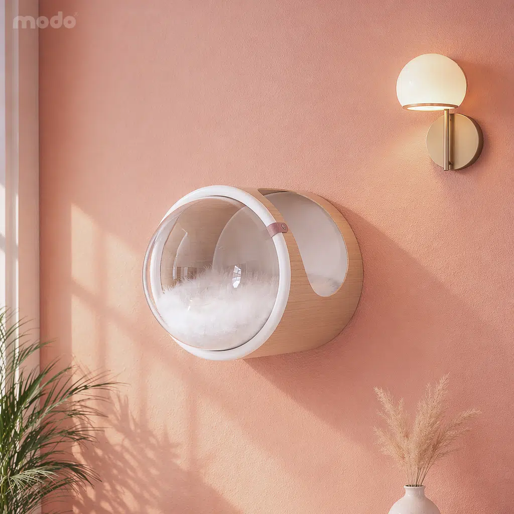

Su nuevo
lugar favorito.
En las alturas.
Una casita para mirar el mundo.
Una pieza de diseño para tu hogar.

Tu estilo.

Una ventana
a su mundo.
El domo acrílico permite observar desde un refugio en altura. La estructura se fija al muro y el cojín interior acompaña el descanso.
El piso vuelve a ser tuyo.
Una solución de pared para integrar su espacio al tuyo.
La entrada importa.
Derecha, izquierda o doble: elige según el recorrido de acceso.
La instalación se revisa.
El tipo de pared y los anclajes se confirman con Modo antes de instalar.
¿Por dónde
va a entrar?
Elige una orientación y el tipo de pared. Te mostramos qué conversar con el equipo de Modo.
Entrada derecha · Muro sólido
Ubica el acceso hacia el recorrido de tu gato. Modo debe confirmar los anclajes adecuados y la instalación para tu muro.
Antes de dar
el salto.
¿Qué incluye?
El Mododomo incluye cojín interior. Consulta acabados, orientación y condiciones actuales directamente en la ficha oficial.
¿Funciona en una pared de drywall?
La marca recomienda muros sólidos como concreto o ladrillo. Si tienes drywall o un muro liviano, consulta con Modo antes de comprar o instalar.
¿Cómo elijo el acabado?
La ficha oficial reúne los colores disponibles. Las fotografías aquí muestran configuraciones reales del producto, no una previsualización de todos los acabados.
ESTRATEGIA DE AUTOMATIZACIÓN · SAMUEL ACUÑA
Primero el espacio. Después, su nuevo refugio.
Lo observado. Mododomo tiene opciones de entrada y medidas publicadas. La guía de esta propuesta distingue el tipo de pared y remite a Modo cuando hace falta revisión.
Hipótesis para validar. Una consulta que incluya pared, espacio y orientación podría facilitar la recomendación del equipo. No reemplaza la evaluación de instalación ni confirma compatibilidad.
Automatización a implementar. Crear una ficha de proyecto con producto, orientación y pared; enviarla a revisión de compatibilidad y luego a cotización. El sistema puede señalar datos faltantes; una persona valida la instalación. La conexión con pedidos se implementaría con acceso autorizado de Modo.
TRES PRIORIDADES, EN ESTE ORDEN
- 01
Mostrar situaciones reales
Organizar contenido con fotos oficiales por espacio y orientación de entrada. Explicar qué observar en el muro antes de decidir, sin inventar configuraciones instaladas.
- 02
Preparar una consulta visual
Reunir medidas disponibles, tipo de pared y entrada preferida. Invitar a compartir una foto con el asesor de Modo; la marca o un instalador valida anclajes y seguridad.
- 03
Dar continuidad a la elección
Pasar la referencia y orientación elegidas a asesoría. Confirmar acabado, precio e instalación antes del pedido; estudiar piezas complementarias solo cuando encajen en el espacio.
Qué medir si se implementa
Consultas con datos de pared · revisiones necesarias · cotizaciones aceptadas · pedidos confirmados
Son indicadores propuestos, no resultados obtenidos. Esta demostración no instala seguimiento ni integra sistemas internos.Base: catálogo público investigado el 1 de noviembre de 2026. Fuente oficial 1 · Fuente oficial 2. Estrategia independiente preparada el 2 de noviembre; su ejecución y condiciones se acuerdan con Modo Colombia.